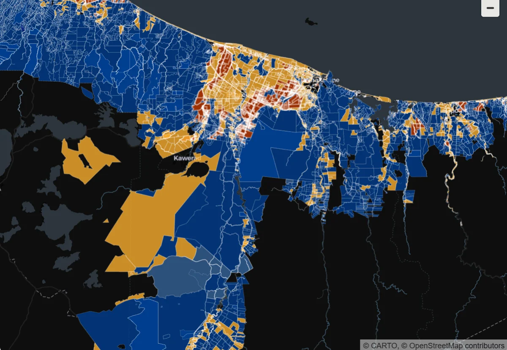

Case study — portfolio project
Terroir
A land-suitability analysis for Bay of Plenty kiwifruit horticulture, built entirely on real New Zealand government geospatial data.
Most portfolio projects run on synthetic data. This one doesn’t.
Terroir is built on real official sources: cadastral parcels from LINZ, soil properties from S-map/LRIS, land cover from LCDB, and climate records from Open-Meteo. That means real data-quality problems along the way — which I found, diagnosed and fixed in the open, visible in the commit history rather than smoothed over.
The section below covers five of those problems in plain language.
-
22,834parcels ingested
-
21,491parcels scored
-
4territorial authorities
What we found along the way
Real government data comes with real problems. Here’s what broke, and how I caught each one.
-
01
A coordinate system that lied about itself
A geospatial source was labelled WGS84, a common global coordinate system — but it was actually NZGD2000, New Zealand’s local standard. The mislabel went unnoticed until it broke a later spatial join, shifting parcels out of place. I fixed it by verifying every new source’s CRS against its own metadata rather than assuming the label was correct.
-
02
A join key that wasn’t actually unique
LINZ’s parcel_id looks like a natural primary key, but cross-leases and unit titles share it across multiple legal records on the same physical land. Merging on it silently let one parcel’s data overwrite another’s, with no error raised. I traced it to a more reliable field and re-verified that one as genuinely unique before reusing it.
-
03Most significant
A macron silently deleted a whole district
Ōpōtiki — like many NZ place names — carries a macron. The plain-ASCII text filter used to select territorial authorities didn’t match it. No error, no warning: Ōpōtiki District was simply absent from the analysis from day one. I only found it when I compared the filtered list against the full set of source districts and saw the gap.
-
04
An off-by-one that misfiled 19% of parcels
The function that sorts parcels into Excellent/Good/Marginal tiers had a boundary error — a score sitting exactly on a tier edge landed one tier lower than it should have. It misclassified roughly 19% of scored parcels before I caught and corrected it.
-
05
A geographic scope that missed a growing region
The initial scope covered three districts. I missed Whakatāne. I only realised later, remembering that I’d worked in Edgecumbe and that there are orchards in that district I hadn’t included. Rather than assuming the remaining neighbouring districts had no orchard land, that was confirmed empirically using the land-cover dataset itself — the evidence, not an assumption, closed the question.
Methodology
Weighted by what actually varies, not by assumption
Each parcel’s suitability score combines four soil properties: soil order, soil texture, soil drainage, and soil depth. The weights — 40/40/10/10 — reflect which factors actually vary meaningfully across the region’s real data, not which factors are assumed to matter most in theory. Point values are grounded in established NZ kiwifruit agronomic research.
Parcels are grouped into three suitability levels — Excellent, Good, Marginal — rather than forced into a fine-grained ranking, since a large share of parcels genuinely tie at the top score. That tie is itself a finding about the region’s geology, not a modelling shortcut.
Full methodology on GitHub →Score weighting
Key results
The region’s land is more suitable than expected — and unevenly so
Region-wide suitability breakdown
- Excellent
- Good
- Marginal (5.5%)
Of the 21,491 scored parcels, three in four land in the Excellent tier — a reflection of the Bay of Plenty’s naturally favourable volcanic soils for kiwifruit, not a lenient scoring model.
Suitability by subzone
The 5 named subzones this analysis shares with Apophenia’s corridor comparison — not all 4 territorial authorities.
- Katikati: 91.5% Excellent, 7.7% Good, 0.7% Marginal
- Te Puke: 90.8% Excellent, 6.6% Good, 2.6% Marginal
- Tauranga: 90.3% Excellent, 8.2% Good, 1.5% Marginal
- Pongakawa: 79.9% Excellent, 11.0% Good, 9.0% Marginal
- Ōpōtiki: 56.4% Excellent, 29.5% Good, 14.1% Marginal
Katikati, Te Puke, and Tauranga cluster near 90% Excellent. Pongakawa runs meaningfully lower, and Ōpōtiki is the clear outlier — barely over half its parcels land in the Excellent tier, with the highest Marginal share of any subzone.
Expansion candidate parcels
Parcels with good soil that aren’t currently under orchard or vineyard use — a real, data-grounded answer to “where could this industry grow”. This reflects physical land suitability only, not investment readiness: it doesn’t model irrigation access, licensing, or land-use change.
Cross-project comparison with Apophenia
Illustrative pattern, n = 5 subzones.
Soil suitability correlates with Apophenia’s synthetic risk indicators, most strongly with Psa disease incidence.
Read this carefully
Apophenia’s risk data is synthetic and illustrative, so this demonstrates cross-project analytical technique — not a validated real-world finding. With only five subzones, it’s also far too small a sample for statistical confidence regardless.
Dropping Ōpōtiki, the strongest outlier, brings the correlation to r = −0.76 (n = 4) rather than collapsing it — but with a sample this small, one subzone still carries visible weight.
Climate risk
Frost risk
Negligible
Across the whole region.
Chill hours
Meaningful coastal vs inland variation.
Heavy-rainfall frequency
Ōpōtiki sees the highest frequency of the five subzones, though all sit within a fairly narrow band.
Suitability map
Every scored parcel, mapped

Limitations
What this model doesn’t cover
-
Flood risk
DEM-based flood modelling is excluded in favour of soil drainage class — elevation alone isn’t a reliable flood indicator without full hydrology.
-
Water-holding capacity
Approximated via soil texture and drainage, since the direct dataset isn’t freely available.
-
Wind exposure and disease risk
Wind exposure and Psa disease risk aren’t modelled in Terroir itself.
-
Slope and machinery access
Slope and machinery operability aren’t modelled.
-
Irrigation access and varietal licensing
Irrigation access and Zespri varietal licensing aren’t modelled — this is why “expansion candidates” reflects physical suitability, not investment readiness.